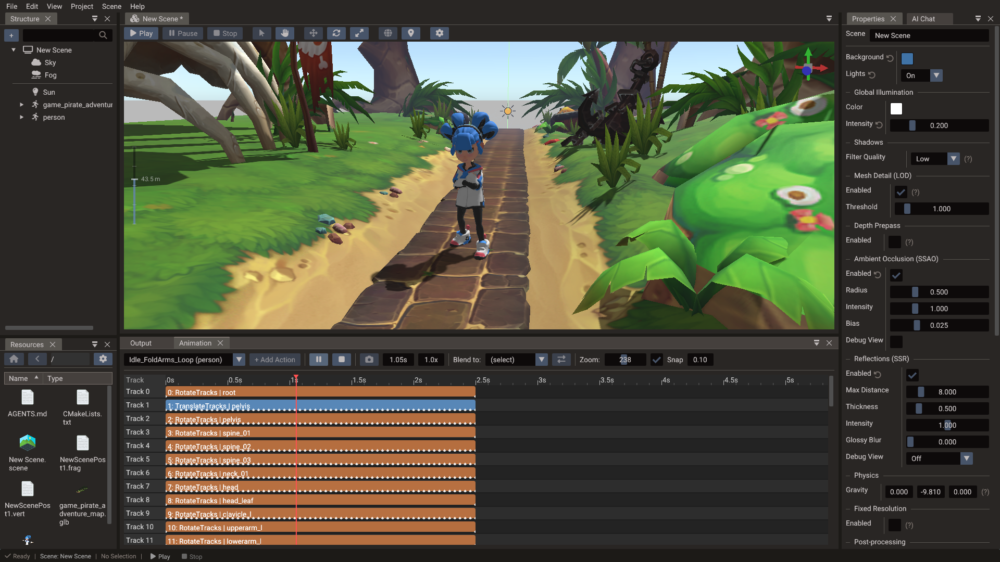

Animation Timeline¶
The Animation Timeline edits time-based changes and previews them in the scene. It
works with entity transforms, sprite frame sequences, skeletal animation clips, morph
targets, and runtime action components — all driven by the ActionSystem at runtime.

Timeline concepts¶
| Concept | Meaning |
|---|---|
| Playhead | Current time or frame being previewed |
| Track | A single animated property channel (e.g. position X, sprite frame, alpha) |
| Keyframe | A value recorded at a specific time on a track |
| Clip | A named time range containing one or more tracks |
| Interpolation | How values are calculated between keyframes (linear, step, ease, etc.) |
| Snap | Grid interval used when placing or moving keyframes |
| Loop | Whether the clip repeats when it reaches the end |
Supported track types¶
| Track type | What it controls |
|---|---|
| Transform | Position, rotation, scale (translate, rotate, scale tracks) |
| Color / Alpha | Color tint and opacity |
| Sprite frame | Active frame index for a Sprite atlas |
| Skeletal clip | Bone transforms from an imported GLTF animation |
| Morph weights | Blend shape weights for facial or deformation animation |
| Particle playback | Play/stop state of a Particles action |
Action frames¶
An animation is a list of action frames. Each frame schedules an action entity to run at a start time on a track (a timeline lane, used only for visual organization — overlapping frames are re-laned automatically).
Add frames with the + Add Action button (which creates a new action entity of the
chosen type), or drag an action entity from the Structure panel onto the tracks
area — a ghost block previews the target track, the grid-snapped start time, and the
frame length before you drop. Invalid drops are rejected with an explanatory tooltip:
entities without an ActionComponent, entities from another scene, and anything that
would make an animation contain itself, directly or through nested animations.
| Operation | How |
|---|---|
| Select a frame | Click the block (details appear in the toolbar) |
| Move a frame | Drag the block; dragging vertically changes track |
| Resize a frame | Drag the block's left or right edge |
| Scroll tracks vertically | When the track stack exceeds the viewport, use its vertical scrollbar or the mouse wheel |
| Zoom the timeline | Use the mouse wheel over the visible time ruler |
| Scroll a long timeline | When blocks, the authored duration, or the playhead exceed the viewport, use the horizontal scrollbar; its range includes trailing space |
| Open the action | Double-click the block to select the action entity |
| Remove a frame | Properties → AnimationComponent → Actions → trash button |
Frame moving and resizing remain available while a timeline preview is paused. After the edit, the preview is evaluated again at the current playhead time. Timeline editing remains locked during active animation playback and scene play mode. If playback or preview shutdown interrupts an active timeline drag, the pending edit is finalized as its normal undo step before the timeline locks.
Automatic duration¶
A frame whose duration is 0 is auto: it follows the action's own length — a
SpriteAnimation lasts as long as its frame sequence, a TimedAction uses its
duration, a nested Animation its own total length. Frames created in the editor
default to auto, so configuring the action later updates the timeline block
automatically.
Resizing a block in the timeline converts it to an explicit duration. To switch
back and forth, use the checkbox next to Duration in the Properties window
(AnimationComponent → Actions): checking it stores 0 (auto) and displays the
resolved duration read-only; unchecking freezes the current resolved value as an
editable number.
Creating a clip¶
- In the Structure panel, create an Animation entity (Create entity → Animation → Animation). Creating it as a child of the entity to animate sets that entity as the animation's target; otherwise set Target in the Properties window (ActionComponent → Target).
- Open the Animation Timeline and pick the animation in the clip selector.
- Right-click empty track space at the first key time and choose Key Position, Key Rotation, Key Scale, or Key Transform. Missing transform tracks are created automatically as auto-duration action frames.
- Scrub to another time, pose the target in the scene view or Properties, and click the camera Snapshot button. Repeat for each pose.
- Press Play in the timeline to preview the clip.
You can also create action frames manually with + Add Action or by dragging action entities from the Structure panel.
Keying transforms¶
Transform keying has two complementary controls: Snapshot for the complete pose at the playhead, and right-click keying for one block or selected channels.
A track with Relative checked stores offsets, not the pose: its keys hold the target's offset from where it was when the preview started (see Relative tracks). Keyed outside a preview, the offset is zero.
Snapshot¶
The camera Snapshot button next to Stop stores the current position, rotation, and scale values of every transform keyframe track reached by the playhead. All writes are grouped into one undo step.
A track is included when its action frame starts at or before the playhead:
- An auto-duration frame (
duration <= 0) remains keyable after its current last key. Adding the key extends the action and grows its block. - An explicit-duration frame is included only while the playhead is inside its fixed span, including the end. Snapshot does not extend it.
- Keys use time local to their own frame (
playhead time - frame start), so moving a block along the timeline does not change where its keys belong.
Snapshot only keys tracks already present in the animation. If no eligible transform track is under the playhead, the button is disabled and its tooltip says No keyframe tracks under the playhead to snapshot. Use empty-area right-click keying when you want to create missing tracks.
Scrubbing starts a paused preview, and Snapshot remains available in that state. It is disabled during active animation playback and scene play mode. The button tooltip shows the exact snapshot time or explains why the action is disabled. Snapshot does not reset the displayed pose, and its keys remain after you stop previewing.
Right-click keying¶
Right-click while the scene is stopped and animation playback is paused:
| Where | Result |
|---|---|
| A transform-track block | Inserts that block's position, rotation, or scale value at the clicked block-local time |
| Empty track space | Keys the animation target's position, rotation, scale, or complete transform |
Block keying always targets the clicked action, even when same-channel blocks overlap. Its clicked time must be inside an explicit-duration block's real span; the menu disables insertion when the block's minimum visual width extends beyond that span.
Empty-area keying reuses the latest matching block active at the clicked time. It can extend auto-duration blocks, but it will not write past an explicit block's end. When the requested channel does not exist yet, it creates the track and an auto-duration action frame. Key Transform, including any track creation, is one undo step; single-channel keying is one undo step as well.
Authoring past the current end¶
The playhead and time field can move beyond the current clip duration (up to one hour), so auto-duration tracks can grow. Preview evaluation still stops at the clip's current end, however: until you extend it, the object holds its end pose at the later authoring time. The Snapshot tooltip and right-click menu warn when this happens.
This held pose is useful for pose-to-pose authoring, but it is not a newly evaluated future pose. After scrubbing past the end, adjust the target before keying if you want different values there.
Keyframes appear as small diamonds along the bottom of track blocks.
Editing keyframes¶
Keyframes of track actions show as diamonds on their timeline blocks. Click a diamond to select it; the selected key is highlighted. Drag it horizontally to change its track-local time using the current timeline snap interval. A key cannot cross its neighbors or move outside an explicit-duration block, and the completed drag is one undo step. Auto-duration blocks grow when their last key moves later.
Values, interpolation, and deletion are edited in the Properties window with the track entity selected (double-click its block to select it):
| Operation | How |
|---|---|
| Move a keyframe in time | Drag its timeline diamond horizontally, or edit its KeyframeTracks time entry |
| Change a keyed value | Edit the entry in the track component's values list |
| Change interpolation | Under KeyframeTracks → Easing, click Add Ease, expand the list, and pick a curve (Ease 0 - 1, …) |
| Remove explicit easing | Expand Easing and use the trash button beside the entry; later entries shift to the preceding segments |
| Delete a keyframe | Trash button next to the time entry (easings and cubic tangents stay aligned) |
| Move position keys visually | Drag the path handles in the scene view |
Sprite animation¶
For 2D frame animation, add a Sprite Frame track and set keyframes to specific frame names or indices from the sliced sprite sheet. Keep frame intervals consistent for smooth playback.
The runtime equivalent is SpriteAnimation. Identify a sprite animation by its
entity name (Structure panel) — SpriteAnimationComponent has no separate Name
field. See the Sprite Slicer page for how to prepare a sprite sheet.
Skeletal animation¶
GLTF models can include one or more named skeletal animation clips. Files with clips, or more than one skin, import the full node tree under the Model, so transform-only nodes animate as well as joints. The timeline editor lets you preview and blend these clips on the Model entity. Use the Bone view to inspect and edit individual joint transforms.
The animation selector uses each animation entity's name. Imported clips start with the
name authored in the GLTF; you can rename the entity in the Structure panel. Runtime
Model:findAnimation and Model:playAnimation string lookups use that same entity name.

At runtime, look up a clip by name on the Model object:
Previewing crossfades between clips¶
At runtime you usually switch clips with a crossfade so the character eases from one motion into the next instead of snapping (see Smooth transitions). You can preview that blend directly in the timeline:
- Select an animation clip and press Play to preview it.
- In the toolbar, pick a clip in the Blend to dropdown.
- Click the ⇄ button. The playing clip fades out while the chosen clip fades in, using the target clip's Fade time, and the viewport shows the blended result.
Each clip carries a Fade time (defaultFadeTime) — the default crossfade duration
used when Model:playAnimation
is called without an explicit time. Edit it in the Properties window under
AnimationComponent → Fade time (~0.2–0.3s reads well for locomotion, ~0.1s for a
quick hit or death). Scrubbing the playhead exits the transition and returns to the
single selected clip.
Use looping clips to see the blend
The blend reads best when you crossfade from a looping clip (idle, run). Blending from a one-shot clip that has already finished will snap, because a finished clip no longer contributes to the pose.
Runtime action system¶
For scripted one-shot and looping motion that does not need a full authored timeline, the runtime action system provides lightweight action types:
| Action | Purpose |
|---|---|
PositionAction |
Animate entity position |
RotationAction |
Animate entity rotation |
ScaleAction |
Animate entity scale |
ColorAction |
Animate material or UI color |
AlphaAction |
Animate opacity |
TimedAction |
Trigger a callback after a delay or on each loop iteration |
SpriteAnimation |
Cycle through sprite frames |
Animation |
Play a skeletal or keyframe clip |
Particles |
Drive particle playback |
TranslateTracks / RotateTracks / ScaleTracks / MorphTracks |
Multi-keyframe tracks with per-segment easing |
All actions support easing curves. See TimedAction
for the full list of EaseType values.
In the Properties window, Play on start starts an action or animation with the scene (checking it sets its State to Running), and Start offset or Random start keep copies out of sync. Timed actions have Loop and Ping-pong, a rotation action can Spin by any Angle, and keyframe tracks have Loop and Relative, so each of them can also run on its own, without an animation. See Runtime actions.
Easing curves¶
Timed actions (PositionAction, RotationAction, …) have a single Ease property in
the Properties window (setFunctionType() in code). Keyframe tracks ease per
segment through a collapsible, sparse Easing list. Add Ease appends the next
explicit segment entry, up to one entry per pair of consecutive keys; expand the list
to edit or remove its Ease 0 - 1, Ease 1 - 2, … rows. Missing trailing entries are
linear. Removing an entry shifts later entries to the preceding segments. GLTF-imported
clips match their authored sampler mode: LINEAR clips leave easing unset, STEP
clips import with every segment set to Step, and CUBICSPLINE clips interpolate from
imported tangents instead — see
Per-segment easing and
Interpolation modes. Common choices:
| Curve | Best for |
|---|---|
LINEAR |
Constant-speed motion, debug |
STEP |
Held poses — stop-motion and stepped, pose-to-pose motion |
QUAD_IN_OUT |
UI transitions and camera moves |
BOUNCE_OUT |
Playful jumps and pop-in effects |
BACK_IN |
Anticipation before a jump |
ELASTIC_OUT |
Springing UI elements |
Best practices¶
- Name clips clearly and consistently (
idle,walk,run,jump,attack). - Keep looping and one-shot animations in separate clips.
- Use consistent frame intervals for sprite animations.
- Prefer skeletal animation for character movement; use keyframe tracks for camera and scene-wide effects.
- Use morph targets sparingly on performance-sensitive targets.
- Test in play mode after changing script-driven animation timing.